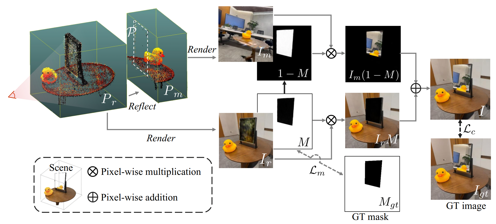

MirrorGaussian: Reflecting 3D Gaussians for Reconstructing Mirror Reflections
The first two video clips show the high-quality rendering results of our method on various datasets
while the third demonstrates the real-time rendering performance of our method.
Abstract
3D Gaussian Splatting showcases notable advancements in photo-realistic and real-time novel view synthesis. However, it faces challenges in modeling mirror reflections, which exhibit substantial appearance variations from different viewpoints. To tackle this problem, we present MirrorGaussian, the first method for mirror scene reconstruction with real-time rendering based on 3D Gaussian Splatting. The key insight is grounded on the mirror symmetry between the real-world space and the virtual mirror space. We introduce an intuitive dual-rendering strategy that enables differentiable rasterization of both the real-world 3D Gaussians and the mirrored counterpart obtained by reflecting the former about the mirror plane. All 3D Gaussians are jointly optimized with the mirror plane in an end-to-end framework. MirrorGaussian achieves high-quality and real-time rendering in scenes with mirrors, empowering scene editing like adding new mirrors and objects. Comprehensive experiments on multiple datasets demonstrate that our approach significantly outperforms existing methods, achieving state-of-the-art results.

Overview of MirrorGaussian. MirrorGaussian is grounded on the mirror symmetry between the real-world scene and its counterpart in the mirror. We first reflect the 3D Gaussians $P_r$ about the mirror plane $\mathcal{P}$ to obtain its mirrored counterpart $P_m$. Then, we rasterize $P_r$ to get the real-world image $I_r$ and the mirror mask $M$, and rasterize $P_m$ to get the mirror image $I_m$. The final image $I$ is composited by $I_r$ and $I_m$ using $M$. $I$ and $M$ are supervised by the captured image $I_{gt}$ and its annotated mirror mask $M_{gt}$, respectively. Note that for the sake of visual simplicity, $P_r$ and $P_m$ have been cropped.
Comparison With SOTA